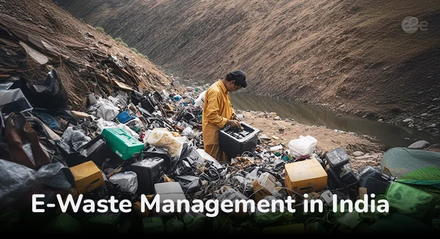

Adopting sustainable e-waste recycling methods is crucial for India’s environmental protection. The country requires a significant overhaul in its e-waste management system to address this growing crisis. Let’s explore why sustainable e-waste management is so important for India's future.
E-waste, or electronic waste, includes old or unused electronic devices like smartphones, laptops, and appliances. In the IT age, the volume of e-waste in India is increasing rapidly. E-waste often contains toxic chemicals such as lead, mercury, and PVC, which pose a threat to both human health and the environment. Without an organized e-waste disposal system, these hazards can escalate into serious health issues and environmental damage.
The informal e-waste sector in India often uses unsafe methods to manage e-waste, which exacerbates the issue. Informal workers collect and burn e-waste without segregating harmful metals, thereby releasing toxic fumes. They either burn it or dump it in landfills, causing substantial environmental pollution. If left unregulated, this will continue to pose a severe environmental threat to India.
Organized e-waste recycling is essential to address these challenges. Recycling e-waste involves treating waste and making practical use of valuable materials. In an organized system, e-waste materials are carefully segregated into reusable, hazardous, and non-reusable categories. Toxic materials are treated to prevent contamination, while valuable materials are extracted for future use. This sustainable approach to e-waste disposal can significantly reduce environmental damage and promote a greener future.